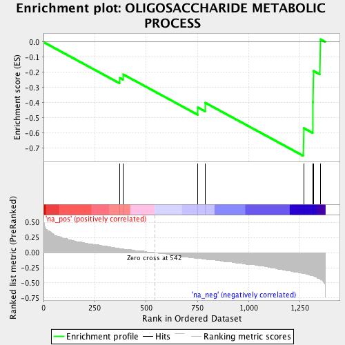
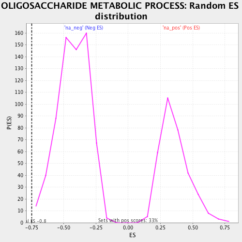

| | | Dataset | ranked_by_GAP.rnk |
| Phenotype | NoPhenotypeAvailable |
| Upregulated in class | na_neg |
| GeneSet | OLIGOSACCHARIDE METABOLIC PROCESS |
| Enrichment Score (ES) | -0.7500842 |
| Normalized Enrichment Score (NES) | -1.7623643 |
| Nominal p-value | 0.002962963 |
| FDR q-value | 0.046993762 |
| FWER p-Value | 0.233 |
Table: GSEA Results Summary

Fig 1: Enrichment plot: OLIGOSACCHARIDE METABOLIC PROCESS
Profile of the Running ES Score & Positions of GeneSet Members on the Rank Ordered List
| PROBE | GENE SYMBOL | GENE_TITLE | RANK IN GENE LIST | RANK METRIC SCORE | RUNNING ES | CORE ENRICHMENT | | 1 | CDC28 | | | 372 | 0.067 | -0.2366 | No |
| 2 | TPS2 | | | 389 | 0.065 | -0.2139 | No |
| 3 | TSL1 | | | 753 | -0.091 | -0.4313 | No |
| 4 | TPS1 | | | 788 | -0.107 | -0.3997 | No |
| 5 | SNF2 | | | 1268 | -0.346 | -0.5667 | Yes |
| 6 | SNF6 | | | 1313 | -0.385 | -0.3953 | Yes |
| 7 | SNF5 | | | 1315 | -0.389 | -0.1898 | Yes |
| 8 | SWI3 | | | 1349 | -0.439 | 0.0183 | Yes |
Table: GSEA details [plain text format]

Fig 2: OLIGOSACCHARIDE METABOLIC PROCESS: Random ES distribution
Gene set null distribution of ES for OLIGOSACCHARIDE METABOLIC PROCESS